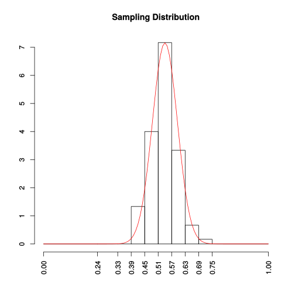

Sampling Distribution and Estimation
Table of Contents
The Sampling Distribution of a Sample Proportion
\( p: \) the proportion of successes in a sample of size \(n\)
\( \pi: \) the proportion of successes in the population
\( \mu_p: \) the mean value of \(p\), \( \sigma_p: \) the standard deviation of \(p\)
Rule 1. \( \mu_p=\pi \) and \( \displaystyle\sigma_p=\sqrt{\frac{\pi(1-\pi)}{n}} \)
Rule 2. When \(n\) is large and \(\pi\) is not too near 0 or 1, the sampling distribution of \(p\) is
approximately normal.
Demo: consider 100 samples of size 80 from a population

The Sampling Distribution of a Sample Mean
\( \bar{x}: \) the sample mean based on a random sample of size \(n\)
\( \mu: \) the population mean, \( \sigma:\) the population standard deviation
\( \mu_{\bar{x}}: \) the mean value of \(\bar{x}\), \( \sigma_{\bar{x}}: \) the standard deviation of \(\bar{x}\)
Rule 1. \( \mu_{\bar{x}}=\mu \) and \( \displaystyle\sigma_{\bar{x}}=\frac{\sigma}{\sqrt{n}} \)
Rule 2. When \(n\) is sufficiently large, the sampling distribution of \(\bar{x}\) is approximately normal.
Estimation Using a Single Sample
Point Estimation
- A point estimate of a population characteristic is a single number estimation that is based on sample data.
- A statistic whose mean value is equal to the value of the population characteristic being estimated is said to be an unbiased statistic. A statistic that is not unbiased is said to be biased.
- \(s^2\) is an unbiased statistic for estimating population variance \(\sigma^2\); while the average squared deviation is biased (on average its values tend to be smaller than variance.)
- A confidence interval for a population characteristic is an interval of values estimated for the characteristic.
Confidence Interval
When \(n\) is large, a 95% confidence interval for \(\pi\) is
\[
\left(p-1.96\sqrt{\frac{p(1-p)}{n}},\; p+1.96\sqrt{\frac{p(1-p)}{n}}\right)
\]
Confidence Interval When σ Is Unknown
If the following conditions are satisfied
• \(\bar{x}\) is the sample mean from a random sample
• the sample size n is large (generally \( n\geq30 \) )
• σ, the population standard deviation, is known
the variable \(\displaystyle z=\frac{\bar{x}-\mu}{\frac{\sigma}{\sqrt{n}}}\) has approximately a standard normal distribution. Thus
the confidence interval for a population mean μ is
\[
\bar{x} \pm \text{(} z\text{ critical value)}\cdot\frac{\sigma}{\sqrt{n}}
\]
When σ is unknown, we use the sample standard deviation s to estimate σ and consider the variable \(\displaystyle T=\frac{\bar{x}-\mu}{\frac{s}{\sqrt{n}}} \)

Figure 2: Student's t-distribution
If \(x_1,x_2,\dots,x_n\) constitute a random sample from a normal population distribution. Then the probability distribution of the variable \(T\) above is the t distribution with df=n-1.